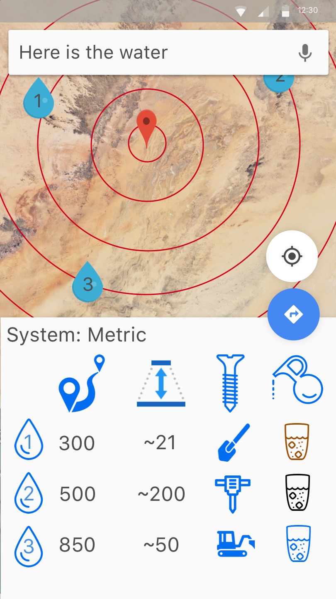

Who are we?
A team of designers, finance consultants, and coders
We want to find hidden water sources using NASA data and AI/ML
Vision to create a for purpose foundation (Non profit foundation)
Why is it important
85% of the world population lives in the driest half of the planet
Droughts are 5% of natural disasters but account for 25% of people effected
783 million do not have access to clean water
We can find other planets can we find water closer to home
How does it work
Data cube and AI challange
Tested Our Hypothosis

Data cube
Multi dimentional table of data
2 Spatial dimentions, Time, data sources
Can be queried from all sides
A really big job but we have a plan
AI Challange
Who can build the best ML system to find water
Challange the big players to do some good with their smart systems
Make data cube available on cloud systems for people to play with
What we tested
Does the surface temprature change with sub surface water?
Short version: Not with the data we can get
- Difficult to detect a few feet in the ground
- Resolution too low. 1km Squares
- Sparse existing water monitoring points
Maybe when combined with other sources in the cube
Does the plant growth change with sub surface water?
Short version: Can't tell
- Monitoring points are not where plants are
- Too low resolution
- Differentiate from irrigation and rain
The App
Something needs to go here?
Impact
The competion could spur large inovations in water supply knowlage
It's not just for rocket scientists any more, all you need is an interesting question
The whole world can help